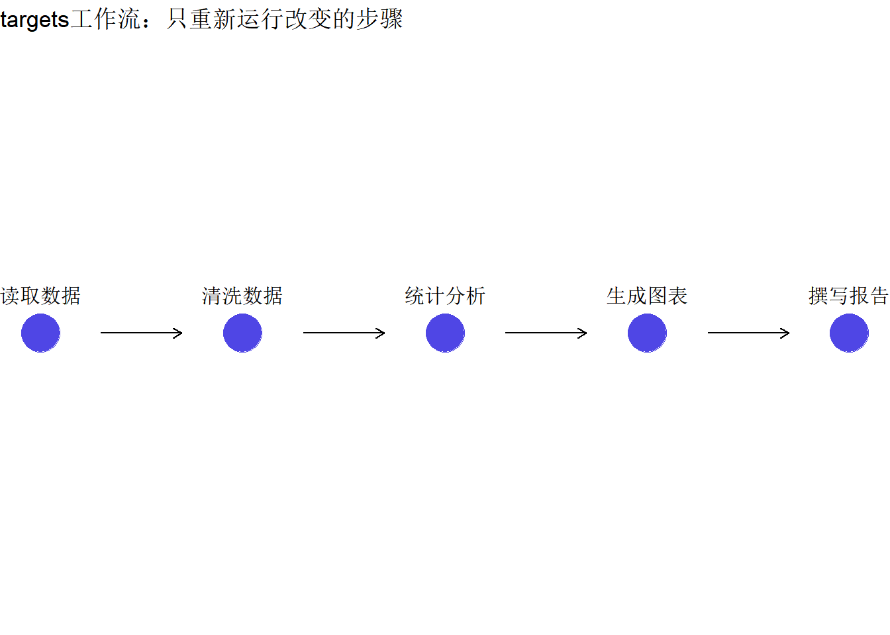

# 创建标准目录结构
create_project_structure <- function(path = ".") {
dirs <- c(
"data/raw",
"data/processed",
"R",
"docs",
"output/figures",
"output/tables",
"reports"
)
for (dir in dirs) {
dir.create(file.path(path, dir), recursive = TRUE, showWarnings = FALSE)
}
# 创建 README
readme <- "# 研究项目名称
## 项目描述
简要描述项目目标
## 目录结构
- `data/`: 数据文件
- `R/`: 分析脚本
- `docs/`: 论文稿件
- `output/`: 输出结果
## 如何运行
1. 安装renv: `install.packages('renv')`
2. 恢复环境: `renv::restore()`
3. 运行分析: `targets::tar_make()`
## 作者
姓名 <email@example.com>
"
writeLines(readme, file.path(path, "README.md"))
message("项目结构创建完成!")
}
# 使用
create_project_structure("my_project")可重复研究与论文写作工作流
实用操作
可重复研究
项目管理
构建规范化的研究项目结构，使用targets自动化工作流，renv管理环境，提升论文发表效率。
为什么需要可重复研究
可重复研究（Reproducible Research） 是指其他研究者（包括未来的你）能够使用相同的数据和代码重现研究结果。
可重复研究的好处
| 好处 | 说明 |
|---|---|
| 提高效率 | 修改分析时不必从头开始 |
| 减少错误 | 自动化减少手动操作失误 |
| 满足期刊要求 | Nature、Lancet等要求共享代码 |
| 增强可信度 | 结果可被验证 |
| 促进合作 | 团队成员能理解你的工作 |
Open Science运动
越来越多的期刊和基金机构要求： - 公开原始数据 - 共享分析代码 - 使用预注册
项目结构规范
标准项目目录
my_research_project/
├── README.md # 项目说明
├── renv.lock # R环境锁定文件
├── _targets.R # 工作流定义
│
├── data/ # 数据目录
│ ├── raw/ # 原始数据（只读）
│ └── processed/ # 处理后数据
│
├── R/ # R函数脚本
│ ├── 01_clean_data.R
│ ├── 02_analysis.R
│ └── 03_visualization.R
│
├── docs/ # 文档
│ ├── manuscript.qmd # 论文稿件
│ └── supplementary.qmd # 补充材料
│
├── output/ # 输出结果
│ ├── figures/
│ └── tables/
│
└── reports/ # 分析报告创建项目结构
renv：环境管理
renv 确保项目使用特定版本的R包，解决”在我电脑上能运行”的问题。
初始化renv
# 安装renv
install.packages("renv")
# 在项目中初始化
renv::init()基本工作流
# 1. 安装需要的包
install.packages("tidyverse")
install.packages("survival")
# 2. 记录当前环境状态
renv::snapshot()
# 3. 恢复环境（在新电脑或他人使用时）
renv::restore()
# 4. 更新包
renv::update()renv.lock文件
{
"R": {
"Version": "4.3.0",
"Repositories": [
{
"Name": "CRAN",
"URL": "https://cloud.r-project.org"
}
]
},
"Packages": {
"dplyr": {
"Package": "dplyr",
"Version": "1.1.3",
"Source": "Repository"
}
}
}targets：自动化工作流
targets 定义分析步骤之间的依赖关系，自动跳过未改变的步骤。
基本概念

创建 _targets.R
# _targets.R 文件内容
library(targets)
library(tarchetypes)
# 加载函数
tar_source("R/")
# 定义工作流
list(
# 读取原始数据
tar_target(
raw_data,
read_csv("data/raw/study_data.csv")
),
# 数据清洗
tar_target(
clean_data,
clean_study_data(raw_data)
),
# 描述性分析
tar_target(
table1,
create_table1(clean_data)
),
# 主分析
tar_target(
main_model,
fit_main_model(clean_data)
),
# 敏感性分析
tar_target(
sensitivity_models,
run_sensitivity(clean_data)
),
# 生成图表
tar_target(
figure1,
plot_main_results(main_model),
format = "file"
),
# 渲染论文
tar_quarto(
manuscript,
path = "docs/manuscript.qmd"
)
)运行工作流
# 查看工作流结构
targets::tar_visnetwork()
# 运行所有步骤
targets::tar_make()
# 读取结果
targets::tar_read(main_model)
# 查看过时的targets
targets::tar_outdated()R/函数脚本示例
# R/01_clean_data.R
clean_study_data <- function(data) {
data %>%
filter(!is.na(outcome)) %>%
mutate(
age_group = cut(age, breaks = c(0, 40, 60, 100)),
exposure_cat = ifelse(exposure > median(exposure), "High", "Low")
)
}
# R/02_analysis.R
fit_main_model <- function(data) {
coxph(Surv(time, event) ~ exposure + age + sex, data = data)
}
create_table1 <- function(data) {
tableone::CreateTableOne(
vars = c("age", "sex", "exposure"),
strata = "outcome",
data = data
)
}Git版本控制
基础命令
# 初始化仓库
git init
# 添加文件
git add .
# 提交更改
git commit -m "初始化项目结构"
# 连接远程仓库
git remote add origin https://github.com/username/repo.git
# 推送到GitHub
git push -u origin main.gitignore文件
# R项目忽略文件
.Rproj.user
.Rhistory
.RData
.Ruserdata
# renv
renv/library/
renv/local/
renv/staging/
# targets
_targets/
# 数据（敏感数据不上传）
data/raw/*.csv
data/raw/*.xlsx
# 输出文件
output/
# 系统文件
.DS_Store
Thumbs.dbQuarto论文模板
论文稿件结构
---
title: "研究标题"
author:
- name: 作者姓名
affiliation: 单位
email: email@example.com
date: today
format:
html:
toc: true
docx:
reference-doc: template.docx
pdf:
documentclass: article
bibliography: references.bib
csl: vancouver.csl
execute:
echo: false
warning: false
---论文正文
## 摘要
**背景**：简要描述研究背景。
**方法**：描述研究设计和分析方法。
**结果**：主要发现。
**结论**：研究结论。
## 引言
引用文献使用 [@author2024]。
## 方法
### 研究设计
这是一项回顾性队列研究。
### 统计分析
::: {.cell}
```{.r .cell-code}
library(targets)
model <- tar_read(main_model)
```
:::
使用Cox比例风险模型进行分析。
## 结果
### 基线特征
::: {#tbl-baseline .cell tbl-cap='表1. 研究人群基线特征'}
```{.r .cell-code}
tar_read(table1) |>
print(printToggle = FALSE) |>
knitr::kable()
```
:::
### 主要分析
::: {.cell}
```{.r .cell-code}
knitr::include_graphics(tar_read(figure1))
```
:::
模型结果显示...（@fig-main）。
## 讨论
本研究发现...
## 参考文献数据与代码共享
数据共享规范
# 创建数据字典
create_data_dictionary <- function(data) {
tibble(
变量名 = names(data),
类型 = sapply(data, class),
描述 = NA,
取值范围 = sapply(data, function(x) {
if (is.numeric(x)) {
paste(range(x, na.rm = TRUE), collapse = " - ")
} else {
paste(unique(x)[1:5], collapse = ", ")
}
})
)
}
# 示例
data_dict <- create_data_dictionary(mtcars)
write_csv(data_dict, "data/data_dictionary.csv")代码共享清单
# 生成依赖报告
renv::dependencies()
# 生成会话信息
sessionInfo()
# 或更详细的
devtools::session_info()实战：完整项目示例
第1步：创建项目
# 创建RStudio项目
usethis::create_project("my_cohort_study")
# 初始化renv
renv::init()
# 安装必要的包
install.packages(c("tidyverse", "survival", "tableone", "targets"))
renv::snapshot()第2步：定义分析函数
# R/functions.R
load_data <- function(path) {
readr::read_csv(path) |>
janitor::clean_names()
}
run_cox <- function(data) {
survival::coxph(
Surv(time, event) ~ exposure + age + sex,
data = data
)
}
summarize_model <- function(model) {
broom::tidy(model, conf.int = TRUE, exponentiate = TRUE)
}第3步：创建工作流
# _targets.R
library(targets)
tar_source("R/functions.R")
list(
tar_target(file, "data/raw/cohort.csv", format = "file"),
tar_target(data, load_data(file)),
tar_target(model, run_cox(data)),
tar_target(results, summarize_model(model))
)第4步：运行并检查
# 可视化工作流
tar_visnetwork()
# 运行
tar_make()
# 读取结果
tar_read(results)总结
| 工具 | 用途 | 关键命令 |
|---|---|---|
| 目录结构 | 组织文件 | 标准化命名 |
| renv | 环境管理 | snapshot(), restore() |
| targets | 工作流自动化 | tar_make() |
| Git | 版本控制 | commit, push |
| Quarto | 论文写作 | quarto render |
推荐资源
最佳实践
- 从项目开始就规范化，不要等到投稿前
- 频繁提交Git，写清楚提交信息
- 原始数据只读，处理后数据另存
- 函数化代码，避免复制粘贴
- 写好README，包括运行说明